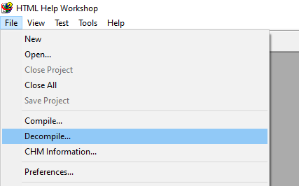

How to create a language file
You can create a language file and upload it for other users to download in the Lemon Ink Community.
1- Download the last version of ESP.txt
Open Lemon Ink extra downloads and download ESP.txt (or ENG.txt)

2- The file structure
Open it.
- Each line, is the text of a different element.
- The first line is the version of the current Lemon Ink (don't change this if you just downloaded ESP.txt, if a long time has passed maybe there is a new version ready to download).
- Placing text between <b>text</b>, will display text.
3- Start translating: Modify
Replace each line with its translation, if you need context, you can load your language file to watch it working.
Extra- Translating the documentation
This is by far harder, but not imposible
Before getting started you will need HTML knowledge and HTML Help Workshop (only for Windows).
- First at all, go to Lemon Ink extra downloads and download Documentacion.chm
- Then open HTML Help Workshop and go to File > Decompile..., select Documentacion.chm and decompile it.

- Finally, take your time translating the documentation and compile it into a CHM file.
You can upload the translated documentation to the Lemon Ink Community. Sure that someone will appreciate it.